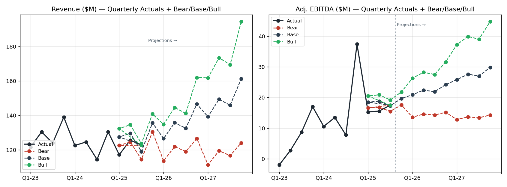

Post-LBO portco view · Public-data build · Rebuilt with Q1–Q3 2025 actuals
In-app rating (4.8★, ~557K iOS reviews) reflects a closed complaint funnel — frustrated users escalate off-platform. Reviews.io 1.5/5 (9.7K reviews, 7% would recommend) · PissedConsumer ~1.5/5 (28.1K) · BBB ~1.0. Bars below show inferred severity weighted by complaint frequency in off-platform corpora.
| Complaint category | Driver | Severity | Redesign tier | KPI on the hook |
|---|---|---|---|---|
| 1. Refund trap | 3-day window on Local Deals; refunds default to Groupon Bucks not original card; "Hassle-free refund" copy contradicted in practice | Critical | Tier 2 (RefundPolicyBadge) · Tier 6/7 (terms above CTA) | Refund-to-original-card rate; Reviews.io / Trustpilot 1-star share on refund topic |
| 2. Invisible customer support | No phone line; chat hidden behind help-center clicks; AI loop before reaching human (~1 hour cited) | Critical | Tier 8 (PostPurchaseHelpEntry, SupportChatPanel) — highest-leverage component in redesign | In-app support deflection rate; time-to-human SLA; off-platform escalation rate |
| 3. Notification overload | ~500M pushes/day platform-wide; one subscriber counted 235 emails in a single month; unsubscribe ineffective | High | Tier 9 (NotificationPreferenceCenter) | Uninstall rate; daily push cap compliance; unsubscribe-to-stop latency |
| 4. Broken post-payment booking | Customer pays Groupon, then routed to separate scheduler that fails ("circle keeps spinning"); refund window closes before resolution | Critical | Tier 6 (AvailabilityCalendar) · Tier 7 (atomic pay+reserve) | Post-payment booking success rate (target ≥95%); merchant booking-tool coverage |
Source: ../groupon-redesign/groupon-research-brief.md · data/customer_sentiment_themes.csv · data/customer_ux_fixes.csv.
Severity is qualitative, derived from complaint-frequency ranking in off-platform review corpora — not a measured churn rate.
| quarter | revenue | gross_profit | gross_billings | adj_ebitda | active_customers_M | active_merchants_K |
|---|---|---|---|---|---|---|
| Q1-2023 | 121.6 | 111.4 | -1.9 | 17.8 | 41.0 | |
| Q2-2023 | 130.5 | 117.5 | 2.8 | 17.2 | 40.0 | |
| Q3-2023 | 124.0 | 111.6 | 8.7 | 16.5 | 38.0 | |
| Q4-2023 | 139.0 | 125.1 | 17.0 | 16.1 | 37.0 | |
| Q1-2024 | 122.6 | 111.6 | 10.6 | 15.3 | 36.0 | |
| Q2-2024 | 124.6 | 113.6 | 13.5 | 14.7 | 34.0 | |
| Q3-2024 | 114.5 | 103.0 | 7.8 | 14.1 | 33.0 | |
| Q4-2024 | 130.5 | 118.0 | 37.4 | 15.4 | 32.0 | |
| Q1-2025 | 117.2 | 386.5 | 15.3 | 15.4 | ||
| Q2-2025 | 125.7 | 416.7 | 15.6 | 15.8 | ||
| Q3-2025 | 122.8 | 416.1 | 17.5 | 16.1 |
| case | quarter | revenue | gross_billings | adj_ebitda | active_customers_M_eop |
|---|---|---|---|---|---|
| Bear | Q1-2025 | 122.6 | 404.6 | 16.6 | |
| Bear | Q2-2025 | 124.6 | 411.2 | 16.8 | |
| Bear | Q3-2025 | 114.5 | 377.8 | 15.5 | |
| Bear | Q4-2025 | 130.5 | 430.6 | 17.6 | 16.2 |
| Bear | Q1-2026 | 113.7 | 394.2 | 13.6 | 16.1 |
| Bear | Q2-2026 | 121.9 | 425.0 | 14.6 | 15.9 |
| Bear | Q3-2026 | 119.1 | 424.4 | 14.3 | 15.7 |
| Bear | Q4-2026 | 126.6 | 439.2 | 15.2 | 15.4 |
| Bear | Q1-2027 | 111.4 | 394.2 | 12.8 | 15.2 |
| Bear | Q2-2027 | 119.5 | 425.0 | 13.7 | 15.0 |
| Bear | Q3-2027 | 116.7 | 424.4 | 13.4 | 14.8 |
| Bear | Q4-2027 | 124.1 | 439.2 | 14.3 | 14.5 |
| Base | Q1-2025 | 127.5 | 420.8 | 18.5 | |
| Base | Q2-2025 | 129.6 | 427.7 | 18.8 | |
| Base | Q3-2025 | 119.1 | 393.0 | 17.3 | |
| Base | Q4-2025 | 135.7 | 447.8 | 19.7 | 16.4 |
| Base | Q1-2026 | 126.6 | 436.7 | 20.9 | 16.6 |
| Base | Q2-2026 | 135.8 | 470.9 | 22.4 | 16.9 |
| Base | Q3-2026 | 132.6 | 470.2 | 21.9 | 17.2 |
| Base | Q4-2026 | 146.6 | 506.0 | 24.2 | 17.4 |
| Base | Q1-2027 | 139.3 | 480.4 | 25.8 | 17.6 |
| Base | Q2-2027 | 149.4 | 518.0 | 27.6 | 17.9 |
| Base | Q3-2027 | 145.9 | 517.2 | 27.0 | 18.2 |
| Base | Q4-2027 | 161.3 | 556.6 | 29.8 | 18.5 |
| Bull | Q1-2025 | 132.4 | 436.9 | 20.5 | |
| Bull | Q2-2025 | 134.6 | 444.2 | 20.9 | |
| Bull | Q3-2025 | 123.7 | 408.2 | 19.2 | |
| Bull | Q4-2025 | 140.9 | 465.0 | 21.8 | 16.7 |
| Bull | Q1-2026 | 134.8 | 463.8 | 26.3 | 17.1 |
| Bull | Q2-2026 | 144.6 | 500.0 | 28.2 | 17.6 |
| Bull | Q3-2026 | 141.2 | 499.3 | 27.5 | 18.1 |
| Bull | Q4-2026 | 162.0 | 558.0 | 31.6 | 18.6 |
| Bull | Q1-2027 | 161.8 | 538.0 | 37.2 | 19.2 |
| Bull | Q2-2027 | 173.5 | 580.0 | 39.9 | 19.8 |
| Bull | Q3-2027 | 169.4 | 579.2 | 39.0 | 20.4 |
| Bull | Q4-2027 | 194.4 | 647.3 | 44.7 | 21.0 |
| case | year | revenue | gross_billings | adj_ebitda | active_customers_M_eop |
|---|---|---|---|---|---|
| Bear | 2025 | 492.2 | 1624.2 | 66.5 | 16.2 |
| Bear | 2026 | 481.3 | 1682.8 | 57.7 | 15.4 |
| Bear | 2027 | 471.7 | 1682.8 | 54.2 | 14.5 |
| Base | 2025 | 511.9 | 1689.3 | 74.3 | 16.4 |
| Base | 2026 | 541.6 | 1883.8 | 89.4 | 17.4 |
| Base | 2027 | 595.9 | 2072.2 | 110.2 | 18.5 |
| Bull | 2025 | 531.6 | 1754.3 | 82.4 | 16.7 |
| Bull | 2026 | 582.6 | 2021.1 | 113.6 | 18.6 |
| Bull | 2027 | 699.1 | 2344.5 | 160.8 | 21.0 |
| case | exit_year | exit_ebitda_M | exit_route | ev_ebitda_x | implied_EV |
|---|---|---|---|---|---|
| Bear | 2027 | 54.2 | Sponsor-to-sponsor at marketplace median (no longer distressed) | 8-10x | ~$550-700M |
| Base | 2027 | 110.2 | Sponsor-to-sponsor or strategic (marketplace + loyalty narrative) | 11-13x | ~$1.4-1.7B |
| Bull | 2027 | 160.8 | Strategic acquisition or IPO re-rating on growth+subscription | 15-18x | ~$2.7-3.3B |
| category | finding | action |
|---|---|---|
| Tours & Activities | Viator still dominates Things-to-Do, but Groupon's NA Local billings re-acceleration (18% YoY in Q3-25) suggests local Experiences inventory is recovering organically — gap is narrowing, not widening | Accelerate with curated Activities partnerships in top-25 DMAs; consider an inventory swap with a mid-tier OTA rather than a wholesale rebuild |
| Goods | Groupon de-emphasised Goods post-2020; Wowcher still monetises heavily. With Local recovering, Goods reintroduction is now upside, not survival | Reintroduce curated Goods at 10-15% of GMV cap once Q4-25 Local trajectory confirms |
| Beauty/Spa | Core strength — discount depth at par with Wowcher. NA Local billings growth implies merchant density may be stabilising or recovering | Maintain reactivation push; redirect spend from blanket coverage to top-50 DMAs that show >20% YoY billings |
| Restaurants | Underrepresented vs OpenTable/Yelp; voucher model still out-of-favour despite Local recovery elsewhere | Pivot to prepaid-credit + loyalty integration; this remains the weakest vertical and should not consume Local turnaround bandwidth |
| Getaways | Inventory & UX trail Booking/Expedia; Local turnaround has not extended into Getaways | White-label inventory deal; consider fully divesting Getaways if Q1-26 trajectory does not improve |
| Cross-cutting | Billings (re)-acceleration is real: +11% Q1-25, +20% Q2-25, +18% Q3-25 NA Local — Groupon is no longer a melting-ice-cube vs Viator/Wowcher in its core | Reposition narrative from defensive to growth; competitive comp set widens to include re-rated marketplaces (e.g. Etsy post-2020) |
